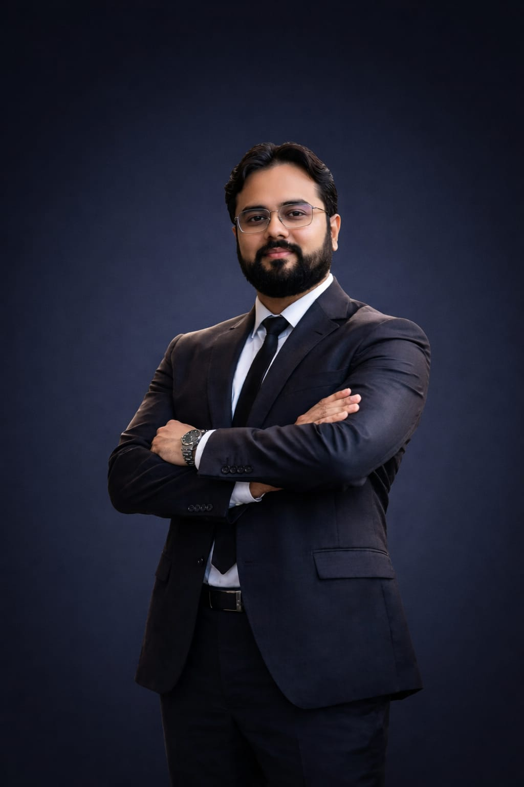

Founder · Finance · Technology
Domain and process expert.
Business strategy and growth architect.
Gurugram, India

Professional overview
Mayank Wadhera is an Indian Chartered Accountant, founder and business strategy advisor based in Gurugram. He brings together finance, compliance, product design and operating processes to help businesses turn complex requirements into practical systems.
His career spans business analysis at Infosys on MCA21, work on the GSTN platform, and product management at EY on DigiGST and e-way bill management. He now builds ventures across accounting support, regulatory technology, valuation, employability and business growth.
Professional foundation
Accounting firm partnerships
CA4CPA: accounting support, tax preparation support and tax technology.
Experience and professional depth
Business analysis for the MCA21 corporate regulatory platform; translating regulatory requirements into functional processes.
Business analysis in the GST technology ecosystem, connecting tax requirements with platform workflows.
Product management across GST and e-way bill solutions. Contributions included functional requirements, tax business rules, workflow design, development coordination, training and enterprise implementation support.
Applying domain and product experience across professional services, compliance technology, education and growth. Legal Suvidha began in 2017; CA4CPA Global LLC was established in 2025.
Qualifications
Additional learning: UGC-NET (Commerce); social audit; CSR and ESG; ISO 9001, 14001 and 45001 lead auditor training.
The venture ecosystem
Focused on bookkeeping, month-end accounting and tax preparation support for CPA firms, alongside a US tax decision software platform.
Supports businesses with incorporation, recurring corporate compliance, accounting and tax processes.
Brings together business valuation, financial analysis, corporate structuring and strategic advisory.
Building task management, reminders, document workflows and client collaboration for professional firms.
Connects practical learning, internships, job readiness and employer requirements through college and industry engagement.
Works on digital visibility, lead generation and execution processes for growing businesses.
Focuses on founder support and startup development.
Part of his wider finance and business services ecosystem.
Start a conversation